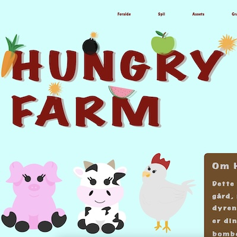

T E M A 4
ANIMATION
I tema 4 handlede det om animation. Vi havde til opgave at kode vores eget spil. Til dette projekt fik vi arbejdet i adobe illustrator, da kravene var at man selv skulle designe sine spil elementer. Til dette projekt valgte jeg stilen two dots, hvilket jeg skulle vise gennem mine spil elementer. Derudover fik vi også ny viden og brugen af javascript, da det var kernen for animationer.
Mere informationLINK TIL HJEMMESIDE
MERE INFORMATION
SKITSER & RENTEGNING

SPIL ELEMENTER & UI ELEMENTER

EFFEKTLYDE
Lyd på det gode..
Lyd på det dårlige.
Lyd på game over skærmen.
Lyd på level complete skærmen.